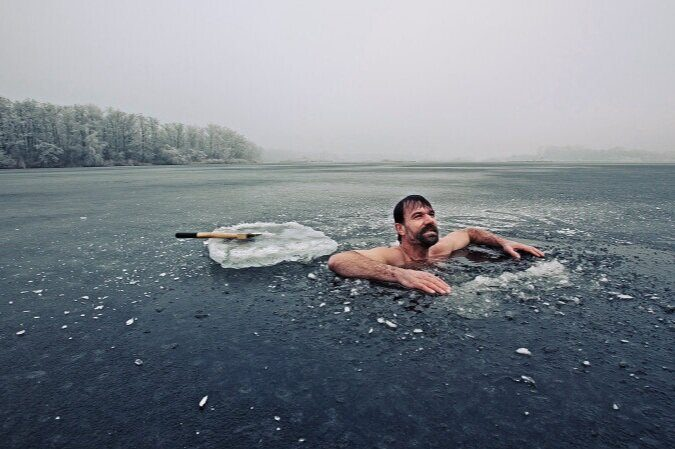
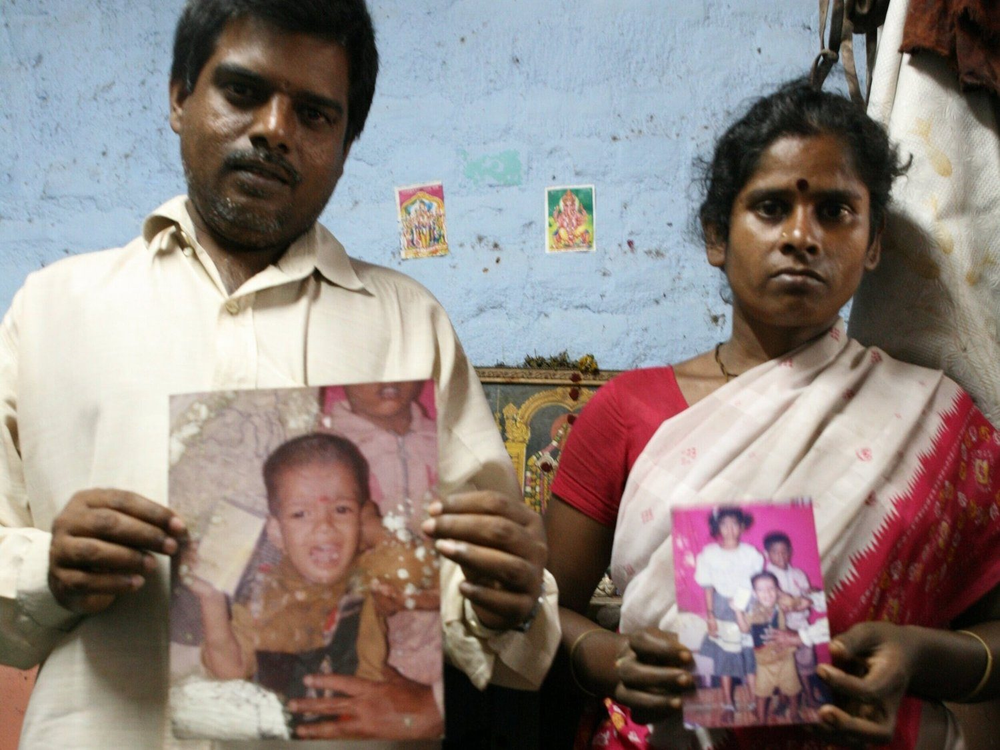

Featured Articles by Scott Carney
The Commodified Body

The Bone Factory: Inside India’s Underground Trade in Human Remains
Cash on Delivery: Inside India’s Rent-a-Womb Business

Meet the Parents: The Dark Side of Overseas Adoption
The Tata Nano: Auto Solution or Pollution?
The Panic Button